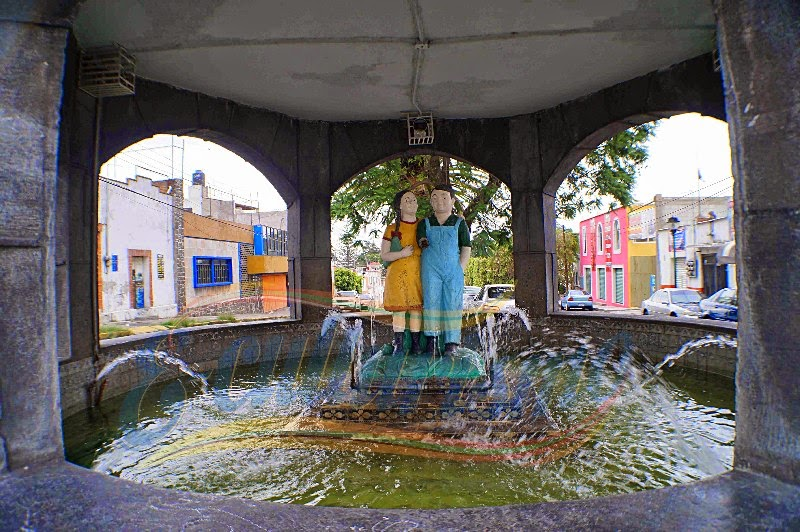

En el antiguo barrio de Xonaca, en la ciudad de Puebla, se encuentra una fuente coronada por las figuras de dos niños: una niña con un vestido y un niño con overol. Aunque hoy parece una simple decoración, la historia detrás de estas estatuas es una de las más melancólicas que se cuentan en el estado.
Cuenta la leyenda que, durante la época del gobernador Maximino Ávila Camacho, vivían en la zona dos hermanos, hijos de un caballerango de la quinta. Los niños eran inseparables y solían caminar juntos hacia la escuela bajo la lluvia. Una tarde de tormenta, mientras intentaban cruzar la calle, desaparecieron sin dejar rastro cerca de un pozo de agua que solía desbordarse.
A pesar de las intensas búsquedas de su padre y los vecinos, los cuerpos nunca fueron encontrados. Se dice que el gobernador, conmovido por la tragedia, ordenó construir la fuente justo en el lugar de la desaparición, colocando las dos figuras de azulejo en honor a los pequeños. Sin embargo, el misterio comenzó poco después de la inauguración.
Los vecinos del barrio aseguran que, durante las madrugadas, la fuente queda vacía. Se escuchan risas infantiles y el sonido de pies pequeños corriendo sobre el pavimento. Dicen que los muñecos cobran vida para jugar en las calles que no pudieron recorrer de adultos, regresando a sus pedestales antes de que raye el alba, con las rodillas raspadas y la ropa húmeda por el agua de la fuente.